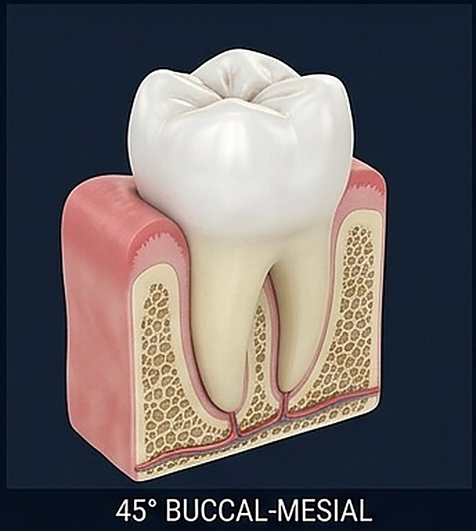
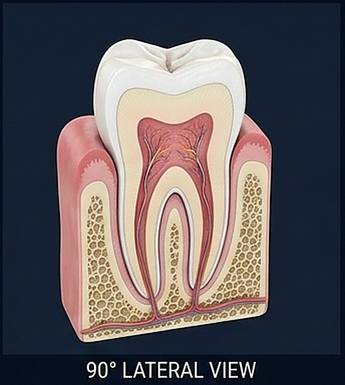
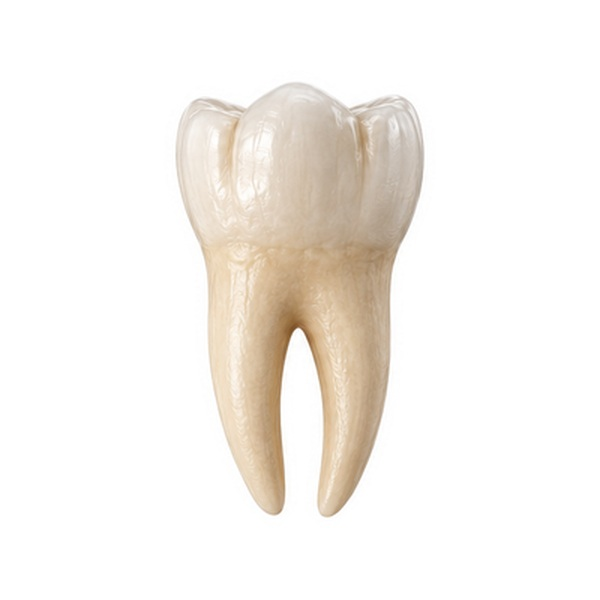
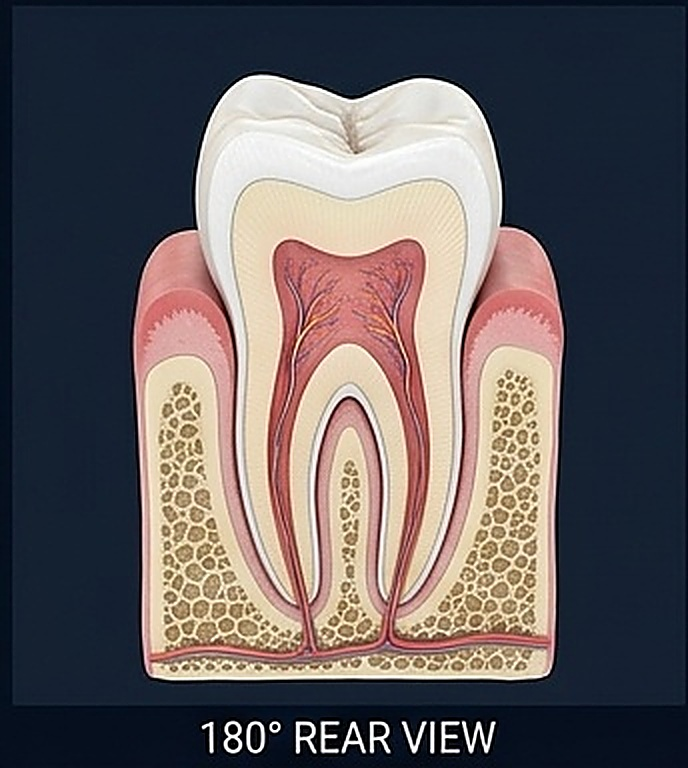
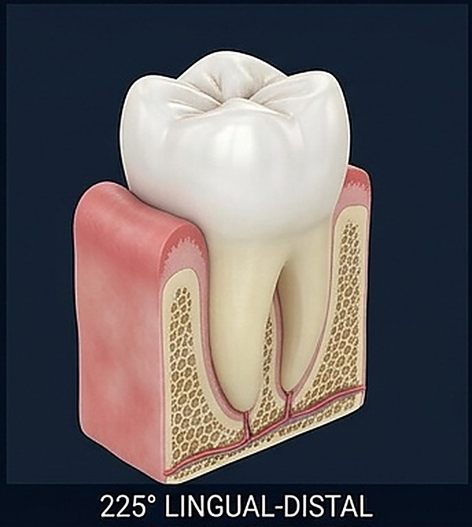
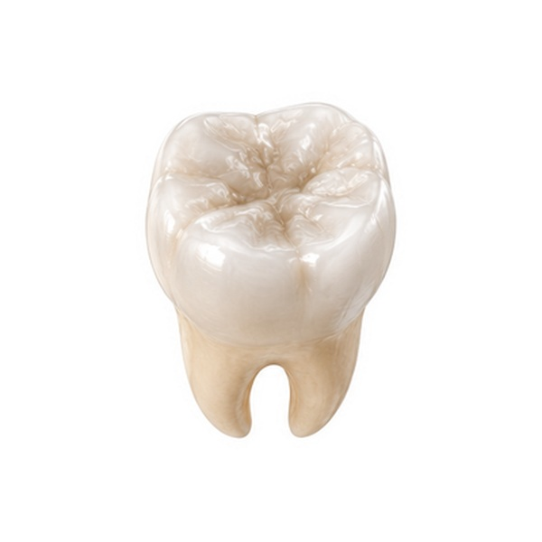
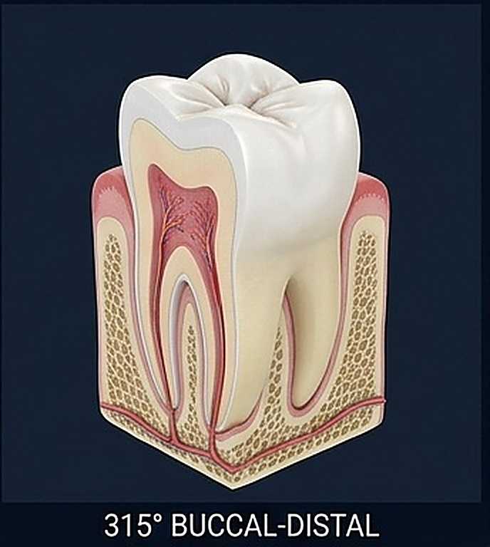

GIRO 360° INTERACTIVO · 8 ÁNGULOS EN SECUENCIA COHERENTE
Secuencia Anatómica Dental 360°: De la Superficie al Foramen Apical
Avanza con rigor anatómico en una rotación continua de 8 ángulos consecutivos (0° a 315°): alterna entre la morfología de la corona y la encía sana, cortes sagitales de la cámara pulpar, trayecto de los conductos radiculares, foramen apical y el corte histológico maestro rotulado con sus 11 estructuras.
0°

45°
90°
135°
180°
225°
270°
315°Síntesis Clínica de los 8 Planos de Rotación (0° a 315°)
Correlación entre el ángulo de visión orbital, el plano anatómico analizado y su relevancia en el diagnóstico y tratamiento odontológico.
| Ángulo | Orientación Espacial | Tipo de Vista | Estructura Crítica | Aplicación Odontológica |
|---|---|---|---|---|
| 0° | Frontal Anterior | Corte Sagital | Techo de la cámara pulpar y cuernos pulpares | Acceso cameral endodóntico y prevención de perforaciones. |
| 45° | Vestibular-Mesial | Superficie 3D | Convexidad vestibular y encía adherida | Restauraciones clase V de Black y biotipo periodontal. |
| 90° | Lateral Interradicular | Corte Sagital | Bifurcación de raíces (furca) y lámina dura | Diagnóstico de lesiones de furca en periodoncia (Hamp I-III). |
| 135° | Lingual-Mesial | Superficie 3D | Cara lingual y cortical ósea mandibular interna | Control de cálculo dental subgingival y tallado protésico. |
| 180° | Posterior Dorsal | Corte Sagital | Constricción apical (límite CDC) y foramen | Longitud de trabajo endodóntica y cirugía apical (apicocectomía). |
| 225° | Lingual-Distal | Superficie 3D | Reborde marginal distal y punto de contacto | Reconstrucción proximal clase II para evitar empaquetamiento. |
| 270° | Lateral Distal | Superficie 3D | Espesor de la cortical vestibular alveolar | Planificación de implantes dentales inmediatos y ortodoncia. |
| 315° | Bucal-Distal 3D | Hemisección 3D | Transición simultánea esmalte exterior - pulpa interior | Patogenia tridimensional de la caries invasiva dentino-pulpar. |
Atlas Comparativo de Tejidos Dentales y Periodontales
Composición físico-química, células formadoras y aplicabilidad clínica directa en operatoria, endodoncia y periodoncia.
| Tejido | Mineralización (% Peso) | Célula Formadora | Regeneración Biológica | Relevancia Clínica en Consulta |
|---|---|---|---|---|
| Esmalte Dental | 96% Inorgánico (Hidroxiapatita) 4% agua y proteínas (amelogeninas) |
Ameloblastos (se pierden en la erupción) | Nula (acelular). Solo remineralización iónica con Flúor. | Sustrato de adhesión para grabado ácido con H₃PO₄ al 37% (patrón microporoso de Buonocore). |
| Dentina | 70% Inorgánico 20% colágeno Tipo I, 10% agua |
Odontoblastos (en la periferia pulpar) | Sí (Dentina terciaria/reaccional frente a caries o fresado). | Hipersensibilidad dentinaria por flujo en túbulos (Brännström). Adhesión mediante capa híbrida. |
| Pulpa Dental | 0% Inorgánico (Tejido conectivo laxo altamente vascularizado) | Fibroblastos, odontoblastos y células madre mesenquimales | Limitada por estar enclaustrada en paredes rígidas inextensibles. | Si el edema inflamatorio colapsa las vénulas apicales, sobreviene necrosis pulpar con flemón periapical. |
| ️ Cemento Radicular | 50% Inorgánico 50% colágeno y agua |
Cementoblastos y cementocitos | Continua a lo largo de toda la vida en el tercio apical. | Ancla las fibras de Sharpey. El raspado radicular excesivo lo elimina, exponiendo dentina hipersensible. |
| Ligamento Periodontal | 0% Inorgánico (Colágeno I y III, sustancia fundamental y células) | Fibroblastos periodontales de alto recambio | Alta (células madre pluripotenciales del ligamento). | Amortiguador viscoelástico de fuerzas oclusales y propiocepción mecanorreceptora (10 a 20 µm). |
| Hueso Alveolar | 65% Inorgánico 35% matriz orgánica y células óseas |
Osteoblastos y osteocitos | Continua mediante remodelación acoplada a la carga (Leyes de Wolff). | Se reabsorbe si no recibe estímulo masticatorio tras la extracción, requiriendo preservación alveolar. |